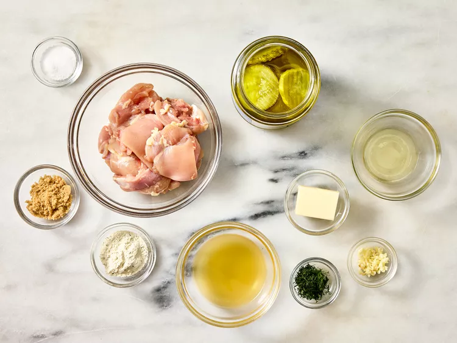
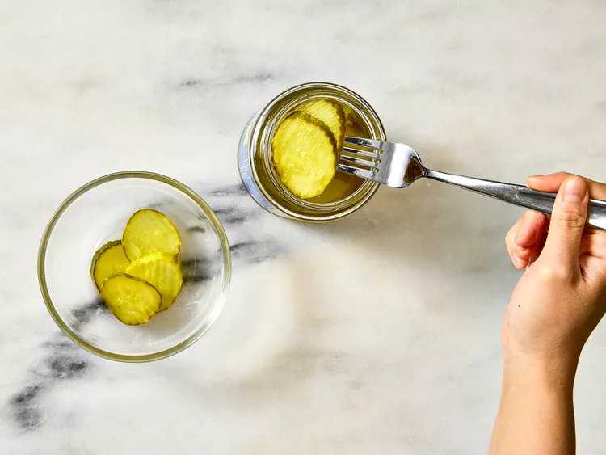
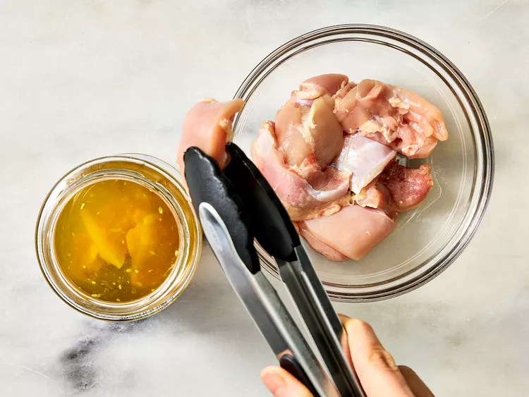
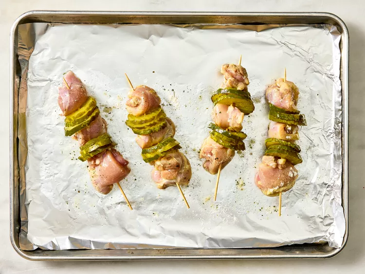
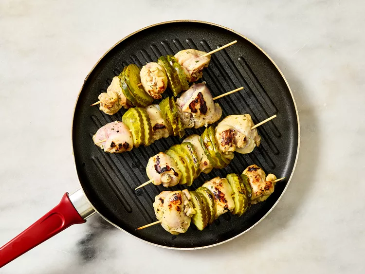
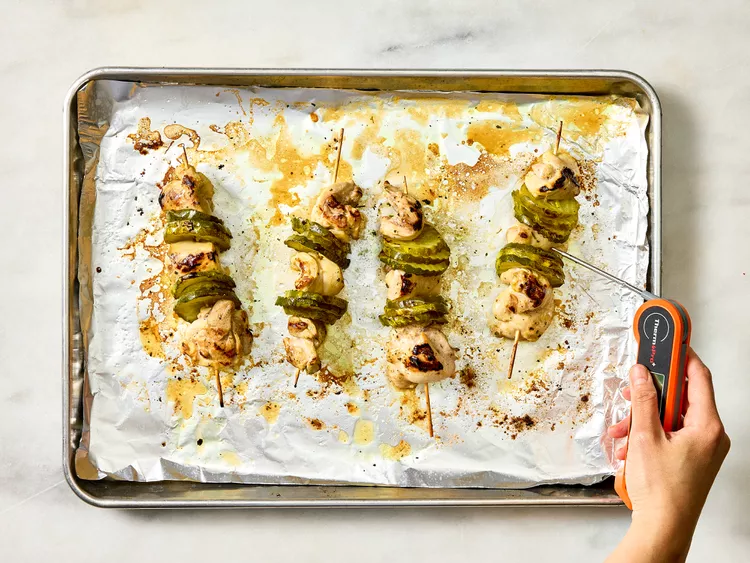
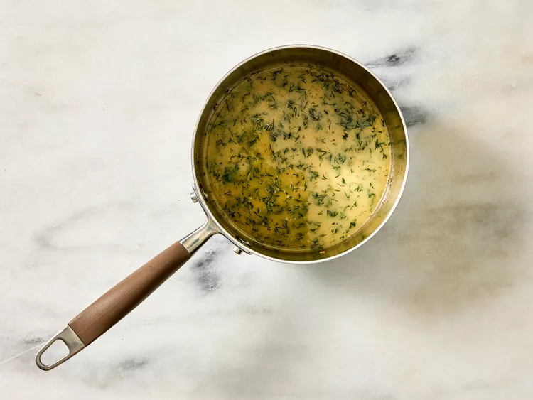
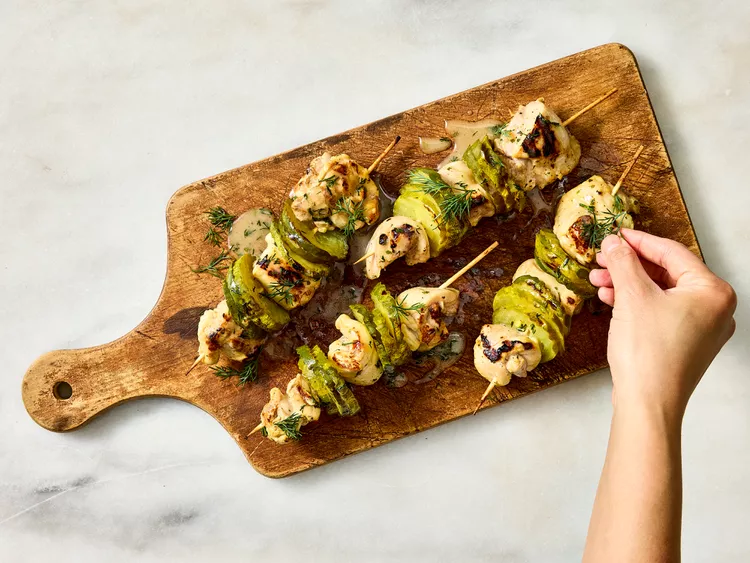
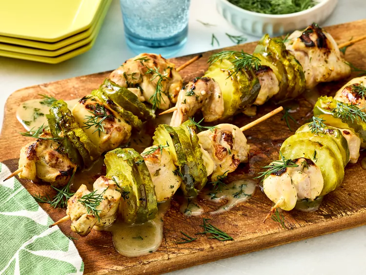

For these dill pickle chicken skewers, boneless chicken thigh pieces marinate in a jar of pickle brine, then are threaded onto skewers alternating with pickles. seared in a grill pan, then baked, they are finished with a tangy, buttery, garlic ranch sauce.
Gather all ingredients.
For skewers, open pickle jar and transfer pickles to a small bowl using a fork, leaving pickle juice in the jar. Set aside.
In the jar with pickle juice, add brown sugar and 1 teaspoon salt; whisk until dissolved. Add chicken to the jar, making sure all pieces are submerged. Cover and refrigerate for at least 3 hours or up to 12 hours.
Preheat the oven to 400 degrees F (200 degrees C). Line a rimmed baking sheet with aluminum foil.
Remove chicken pieces from pickle juice; discard juice. Thread 1 chicken piece followed by 3 pickle chips onto an 8-inch skewer; repeat layers once, then finish with a third chicken piece. Continue threading remaining chicken and pickles onto skewers as needed; reserve any extra pickles for another use. Place skewers on the prepared baking sheet; pat dry using paper towels. Evenly brush skewers with oil. Sprinkle chicken pieces evenly with ranch dressing mix and remaining 3/4 teaspoon salt.
Heat a grill pan over medium-high heat until water sprinkled on immediately sizzles. Grill skewers, pressing down on chicken as needed, just until marks form on two sides, about 1 minute per side. Return skewers to baking sheet.
Bake in the preheated oven until an instant-read thermometer inserted in the thickest part of the chicken registers at least 165 degrees F (74 degrees C), 7 to 12 minutes.
Meanwhile, for sauce, melt 3 tablespoons butter in a saucepan over medium heat; add garlic and cook, stirring constantly, until butter starts to brown and garlic is lightly golden, about 30 seconds. Remove from heat; whisk in broth, ranch dressing mix, dill, and salt until well combined. Whisk in remaining 1 tablespoon butter until melted and emulsified.
Transfer skewers to a serving plate; drizzle with sauce and serve immediately. Garnish with more dill, if desired.
Enjoy!
